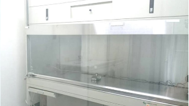
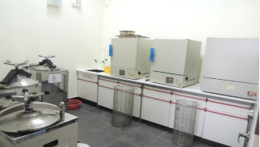
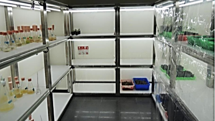
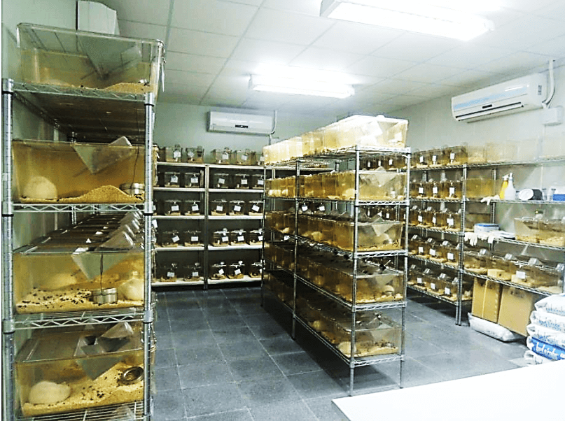
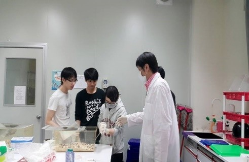

- 位置：理工學院 A 棟 4 樓
- 數量： 3 間
- 無菌空間：庫板隔間、HEPA 負壓空調
- 主要設備：倒立式顯微鏡、二氧化碳培養箱、無菌操作台、水浴槽、液態氮桶。
細胞培養室


- 位置：理工學院 A 棟 3 樓
- 空間：庫板隔間、HEPA負壓空調、12 小時循環光照、定溫 25oC 設有 220 大、小鼠飼養籠之規模，可飼育包括剔除胸腺的裸鼠（Nude mice）、基因轉殖鼠 (Transgenic mice)及基因剔除鼠(Knock-out mice)。
- 主要設備：氣體麻醉、腦部定位儀、水迷宮、基本手術與保定麻醉器材。